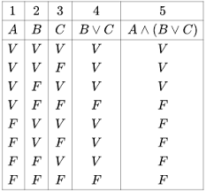
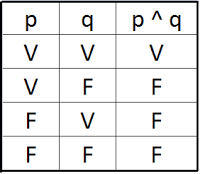
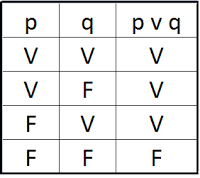
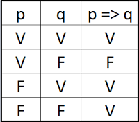
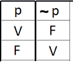

Clase 1: Que es la matematica discreta, Tablas de verdad (23-10-2019)
Clase 1 libro
Dentro de este primer ciclo vamos aver:
- Logica
- Tablas de verdad
- Circuitos logicos
- Equivalencia logica
- Leyes de la logica
- Metodos de demostracion matematica
- Conjuntos
- Analisis combinatorio
Segundo ciclo:
- Grafos y arboles
- Software matematico (exel, mathlab, maplet)
- Maquinas de estado ___
Vamos a trabajar con la version 5 del libro "Kenneth Rosen Discrete Mathematics and Its Applications", el profesor explicara la clase por 90 minutos o menos, luego practicaremos en las computadoras. Todos somos responsables si algo se pierde en el curso. Los que tienen portatiles las pueden traer y usarlas. Vamos a usar un software que se llama maplet para laboratorio. El no nos dara turoriales sobre este software porque somos de informatica :v
Este primer ciclo usaremos Maplet y exel, y en el segundo Mathlab La entrada es a las 10 am, si el maestro no llega en 30 minutos nos podemos ir. En cuanto a las calificaciones, el examen vale 15 puntos, un aporte que se tomara en un mes vale 10 puntos, los deberes valen 5. Hay que hacer un portafolio individual, que valdra 5 puntos. Un proyecto de investigacion vale 10 puntos. La actuacion son 5 puntos. Cada ciclo son 50 puntos.
En el portafoleo iran las cases y consultas y hay que subirlo a la plataforma antes del examen de medio ciclo. Las clases van en un archivo, las consultas en otro, y el proyecto tambien. Los deberes son en forma virtual. Todas las diapositivas que el presenta estan sacadas del libro.
Su correo es wchavez@utm.edu.ec
Su numero es 0999434386
<<< Maria Jose Acosta 18:00
Tendremos solo 16 clases, no deberiamos perder ninguna clase, si un dia no puede venir, enviara la clase para verla online.
Clase:
Las computadoras no entienden nuestro lenguaje, por esto debemos traducir lo que les queremos decir. Lo que las computadoras entienden es la variacion del voltaje que solo tiene dos valores, es decir encendido o no, 0 y 1.
- Propociciones
En la lógica proposicional nos interesan los enunciados aseverativos y se les llama proposiciones. La lógica se interesa por este tipo de enunciados porque se les puede asignar un valor de verdad, ya sea falso (la información es incorrecta) o verdadero (la información es correcta). En este proyecto de aprendizaje nos interesan únicamente las expresiones aseverativas o proposiciones que cumplen con estas características:
Solo pueden tener uno de los siguientes valores de verdad:
Verdadero: Usualmente representado con la letra V
Falso: Usualmente representado con la letra F
No pueden ser falsas y verdaderas al mismo tiempo.
Su valor de verdad depende únicamente de las proposiciones mismas y no de factores externos.
- Proposiciones compuestas
Las proposiciones individuales se llaman proposiciones primitivas ya que no es posible descomponerlas en elementos más sencillos. Sin embargo, si es posible combinarlas para crear estructuras más complejas. Por ejemplo, podemos afirmar cosas como: «mi carro es rojo» y «el elefante es grande» y combinar ambas proposiciones de diversas maneras:
* Mi carro es rojo y el elefante es grande.
* Mi carro es rojo o el elefante es grande.
* Si el elefante es grande entonces mi carro es rojo.
* No es cierto que mi carro es rojo o que el elefante es grande.
- Tabla de verdad
Es una tabla para comparar proposiciones, suelen usarse las letras P y Q para representarlas, siguiendo en orden alfabetico por si hay mas.

Una tabla de verdad lista todos los posibles valores de una o varias proposiciones simples y el valor de verdad de una o varias proposiciones compuestas construidas a partir de las proposiciones simples. En el caso más sencillo tenemos satiro simplemente una proposición simple y listamos los valores de verdad que puede tener, que en el caso de la lógica proposicional son únicamente 2: verdadero (V) y falso (V).
En general una tabla debe tener 2^n filas, donde n es la cantidad de proposiciones simples.
- Conectores logicos
<<< O_O hasta me dio sueño escuchando esta clase de 3 horas
TABLA DE VERDAD, LOGICA PROPOSICIONAL Y LEY DE MORGAN
TABLAS DE VERDAD
Estas tablas pueden construirse haciendo una interpretación de los signos lógicos, ¬ , ∧ , ∨ , → , ↔ ,como: no, y, o, si…entonces, sí y sólo si, respectivamente. La interpretación corresponde al sentido que estas operaciones tienen dentro del razonamiento.
Puede establecerse una correspondencia entre los resultados de estas tablas y la deducción lógico matemática. En consecuencia, las tablas de verdad constituyen un método de decisión para chequear si una proposición es o no un teorema.
Para la construcción de la tabla se asignará el valor "V" una proposición cierta y "F" una proposición falsa.
LA CONJUNCIÓN.
Símbolo gramatical: y.
Símbolo lógico: Ʌ.
La conjunción solamente es cierta si lo son sus dos componentes.

LA DISYUNCIÓN.
Símbolo gramatical: o.
Símbolo lógico: V.
La disyunción solamente es falsa si lo son sus dos componentes.

LA IMPLICACIÓN.
Símbolo gramatical: si, entonces.
Símbolo lógico: →.
La implicación es falsa únicamente si el antecedente es verdadero y el consecuente es falso.

LA DOBLE IMPLICACIÓN.
Símbolo gramatical: si y solo si.
Símbolo lógico: ↔.
La doble implicación es verdadera únicamente si el antecedente es verdadero y el consecuente es verdadero, o, el antecedente es falso y el consecuente es falso.

LA NEGACIÓN.
Símbolo gramatical: no.
Símbolo lógico: ~.
La negación cambia el valor de los elementos de verdadero a falso, y de falso a verdadero.
